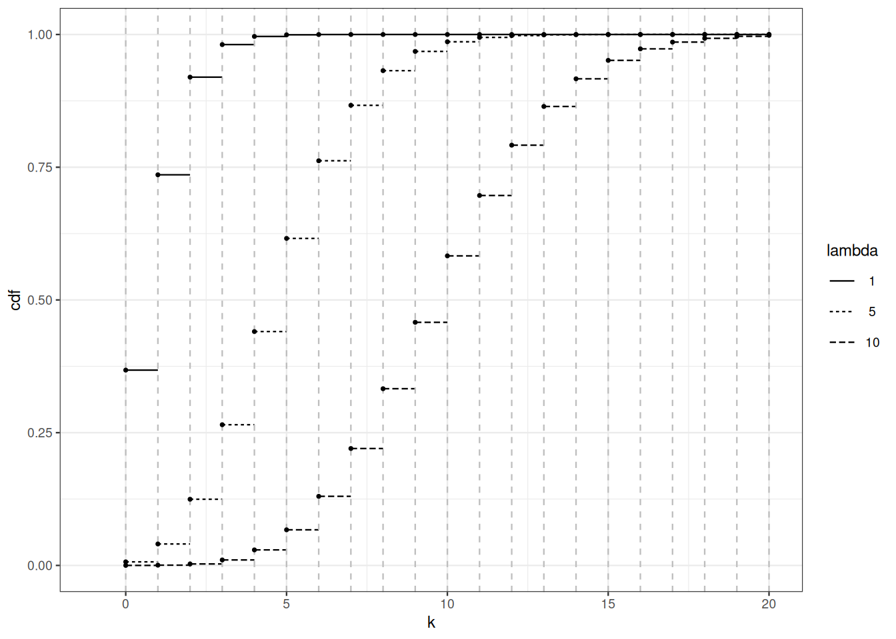

2 Un minimum de théorie de la mesure
2.1 Feuille de route
Pour faire de la modélisation stochastique de manière confortable, il faut des fondements et une notation cohérents. Dans ce chapitre, nous posons les bases du développement à venir. La théorie des probabilités est née de l’interaction entre la combinatoire et les jeux de hasard (XVIIe siècle). À cette époque, l’ensemble des issues était fini, et il était légitime de penser que tout ensemble d’issues avait une probabilité bien définie. Lorsque les mathématiciens ont commencé à faire de la modélisation stochastique dans différentes branches des sciences (astronomie, thermodynamique, génétique, …), ils ont dû traiter des ensembles d’issues non dénombrables. Concevoir une définition rigoureuse de ce qu’est une loi de probabilité a pris du temps. Les progrès de l’intégration et de la théorie de la mesure au cours du XIXe siècle et des premières décennies du XXe siècle ont conduit aux fondements modernes de la théorie des probabilités, fondés sur la théorie de la mesure.
2.2 Univers, partie et \(\sigma\)-algèbres
Un univers est un ensemble (d’issues possibles) que nous décidons d’appeler univers. L’univers est souvent noté \(\Omega\). Les éléments génériques de \(\Omega\) (les issues) sont notés \(\omega\).
Exemple 2.1 Si l’on considère le lancer d’un dé comme un phénomène aléatoire, l’ensemble des issues est l’ensemble des étiquettes sur les faces \(\Omega = \{1, 2, 3, 4, 5, 6\}\). Si l’on lance deux dés, l’ensemble des issues est constitué de couples d’étiquettes \(\Omega' = \{(1,1), (1, 2), (1, 3), \ldots, (6,6)\} =\Omega^2\).
Exemple 2.2 Dans le problème idéalisé de hachage (Section 1.1), l’univers est l’ensemble des fonctions de \(1, \ldots, n\) vers \(1, \ldots, m\). La taille de l’univers est \(m^n\).
Un univers peut être fini ou dénombrable, ou non. Si l’univers est dénombrable, tous ses sous-ensembles peuvent être appelés événements. Des probabilités sont attribuées aux événements. Si l’univers est dénombrable, il est possible d’attribuer une probabilité à chacun de ses sous-ensembles. Lorsque l’univers n’est pas dénombrable (par exemple \(\mathbb{R}\)), attribuer une probabilité à tous les sous-ensembles n’est pas possible. Il faut restreindre la collection de sous-ensembles afin d’attribuer des probabilités aux éléments de la collection de manière cohérente.
Dans la suite, \(2^{\Omega}\) désigne la collection de tous les sous-ensembles de \(\Omega\) (la partie de \(\Omega\)).
Une collection raisonnable d’événements doit être une \(\sigma\)-algèbre.
Quelle est la plus petite \(\sigma\)-algèbre (au sens de l’inclusion) qui contient le sous-ensemble \(A\) de \(\Omega\) ?
La proposition suivante montre que les \(\sigma\)-algèbres sont stables sous les opérations ensemblistes dénombrables. On aurait pu remplacer l’union dénombrable par l’intersection dénombrable dans la définition des \(\sigma\)-algèbres. C’est une conséquence des lois de De Morgan :
\[ (A \cup B)^c = A^c \cap B^c \qquad \text{and} (A \cap B)^c = A^c \cup B^c \]
Une \(\sigma\)-algèbre de sous-ensembles est stable par intersections dénombrables.
Preuve. Pour \(A \subseteq \Omega\), posons \(A^c = \Omega \setminus A\). Soient \(A_1, \ldots, A_n, \ldots\) des éléments de la \(\sigma\)-algèbre \(\mathcal{G}\) de sous-ensembles de \(\Omega\). Pour chaque \(n\), \(A_n^c \in \mathcal{G}\), par définition de \(\sigma\)-algèbre, \[\begin{align*} \cap_n A_n & = \Big(\big(\cap_n A_n\big)^c\Big)^c \\ & = \Big(\cup_n A_n^c\Big)^c \qquad \text{De Morgan} \, . \end{align*}\] Par définition d’une \(\sigma\)-algèbre, \(\cup_n A_n^c \in \mathcal{G}\), et pour la même raison, \(\Big(\cup_n A_n^c \Big)^c \in \mathcal{G}\).
La proposition suivante nous permet de parler de la plus petite \(\sigma\)-algèbre contenant une collection de sous-ensembles ; cela conduit à la notion de \(\sigma\)-algèbre engendrée.
L’intersection de deux \(\sigma\)-algèbres de sous-ensembles de \(\Omega\) est une \(\sigma\)-algèbre de sous-ensembles de \(\Omega\).
Preuve. Soient \(\mathcal{G}\) et \(\mathcal{G}'\) deux \(\sigma\)-algèbres de sous-ensembles de \(\Omega\). L’intersection des deux \(\sigma\)-algèbres est
\[ \Big\{ A : A\subseteq \Omega, A \in \mathcal{G}, A \in \mathcal{G}' \Big\}\, . \]
En effet, l’intersection d’une collection éventuellement non dénombrable de \(\sigma\)-algèbres est une \(\sigma\)-algèbre (vérifier cela). Grâce à cette propriété, la notion de \(\sigma\)-algèbre engendrée par une collection de sous-ensembles est bien fondée.
2.2.1 \(\sigma\)-algèbre engendrée
Étant donné une collection \(\mathcal{C}\) de sous-ensembles de \(\Omega\), il existe une plus petite \(\sigma\)-algèbre unique contenant tous les sous-ensembles de \(\mathcal{C}\) ; elle est appelée la \(\sigma\)-algèbre engendrée par \(\mathcal{H}\) et notée \(\sigma(\mathcal{C})\).
Exemple 2.3 Considérons le lancer d’un dé, \(\Omega = \{1, \ldots, 6\}\), et posons \[\mathcal{H} = \Big\{\{1, 3, 5\}\Big\}\, .\] Il s’agit d’une collection constituée d’un seul événement (l’issue est impaire). L’algèbre engendrée par \(\mathcal{H}\) est \[\sigma(\mathcal{H}) = \Big\{ \{1, 3, 5\}, \{2, 4, 6\}, \emptyset, \Omega \Big\} \, .\]
Deux types de \(\sigma\)-algèbres jouent un rôle central dans un cours de probabilités de base :
- la partie des ensembles dénombrables ou finis.
- les \(\sigma\)-algèbres boréliennes des espaces topologiques.
Cette définition s’applique à tout espace topologique. Rappelons qu’une topologie sur un ensemble \(E\) est définie par une collection \(\mathcal{E}\) d’ensembles ouverts. Cette collection est caractérisée par les propriétés suivantes :
- \(\emptyset, E \in \mathcal{E}\)
- Une union (éventuellement non dénombrable) d’éléments de \(\mathcal{E}\) (ensembles ouverts) appartient à \(\mathcal{E}\) (est un ensemble ouvert)
- Une intersection finie d’ensembles ouverts est un ensemble ouvert.
Dans la topologie usuelle sur \(\mathbb{R}\), un ensemble \(A\) est ouvert si pour tout \(x \in A\), il existe un \(r>0\) tel que \(]x-r, x+r[ \subseteq A\). Tout intervalle de la forme \(]a,b[\) est ouvert (ce sont les intervalles ouverts).
Cette topologie se généralise à toute dimension finie \(\mathbb{R}^d\).
Nous sommes maintenant prêts à poser le cadre de la modélisation stochastique. Le terrain de jeu consiste toujours en un espace mesurable.
Exemple 2.4
- Si \(\Omega\) est un ensemble dénombrable ou fini, alors \((\Omega, 2^\Omega)\) est un espace mesurable.
- Si \(\Omega=\mathbb{R}\), alors \((\mathbb{R}, \mathcal{B}({\mathbb{R}}))\) est un espace mesurable.
Jusqu’ici, nous n’avons pas parlé de théorie des probabilités, mais nous sommes maintenant équipés pour définir des lois de probabilité et pour les manipuler.
2.3 Lois de probabilité
Une loi de probabilité associe une \(\sigma\)-algèbre à \([0,1]\). C’est un cas particulier d’un concept plus général appelé mesure. Nous énonçons ou rappelons des notions importantes de la théorie de la mesure. L’idée clé qui sous-tend l’élaboration de la théorie de la mesure est que l’on doit s’abstenir d’essayer de mesurer tous les sous-ensembles d’un univers (sauf si cet univers est dénombrable). Les tentatives de mesurer tous les sous-ensembles de \(\mathbb{R}\) conduisent à des paradoxes et sont de peu d’utilité pratique. La théorie de la mesure commence par reconnaître les propriétés souhaitables que toute mesure utile devrait posséder, puis elle construit des objets satisfaisant ces propriétés sur des \(\sigma\)-algèbres d’événements aussi larges que possible, par exemple sur les \(\sigma\)-algèbres boréliennes.
Cela motive la définition de la \(\sigma\)-additivité.
Notons que si \(\mathcal{F}\) est une \(\sigma\)-algèbre, \(\Big(\cup_{n \in \mathbb{N}} A_n\Big) \in \mathcal{F}\). La \(\sigma\)-additivité s’accorde bien avec les \(\sigma\)-algèbres, mais il est pertinent de définir la \(\sigma\)-additivité par rapport à des collections de sous-ensembles plus générales.
Preuve. a.) Posons \(B_{1} = A_1\), et \(B_{n+1} = A_{n+1} \setminus A_n\) pour chaque \(n\) ; alors \((B_n)_n\) est une suite d’éléments de \(\mathcal{A}\) deux à deux disjoints. On a \(\cup_n B_n = \cup_n A_n\) et, par \(\sigma\)-additivité, \(\mu(\cup_n A_n) = \sum_n \mu(B_n)\)
\[\sum_{n\leq m} \mu(B_n) = \mu\left(\cup_{n\leq m} B_m\right) = \mu(A_m)\]
D’où \(\lim_{m\to \infty} \mu(A_m) = \sum_{n\in \mathbb{N}} \mu(B_n)= \mu(\cup_n A_n)\)
b.) Le second énoncé se démontre de manière analogue.
c.) Soit \((A_n)_n\) telle que \(A_n = \emptyset\) pour chaque \(n\) ; c’est une suite d’éléments de \(\mathcal{A}\) deux à deux disjoints ; par \(\sigma\)-additivité, on a
\[\sum_{n\in \mathbb{N}} \mu(\emptyset) = \mu(\emptyset)\]
ce qui implique \(\mu(\emptyset)=0.\)
Par Proposition 2.1, pour toute mesure positive \(\mu\), on a \(\mu(\emptyset)=0\). Lorsque \(\mu(\Omega)\) est fini, on dit que \(\mu\) est une mesure positive finie.
Une mesure positive \(\mu\) n’est pas nécessairement une loi de probabilité. Par exemple, la mesure de comptage \(\mu\) sur \(\mathbb{N}\) satisfait \(\mu(A) = |A|\) pour tout \(A \subseteq \mathbb{N}\), donc on a \(\mu(\mathbb{N})=\infty.\)
Remarque 2.1. La notion de \(\sigma\)-additivité est strictement plus forte que l’additivité finie. En supposant l’ (comme d’usage en analyse ou en probabilités), il existe une fonction \(\mu\) qui associe à \(2^{\mathbb{N}}\) des valeurs dans \([0,1]\), qui est additive (\(\mu(A \cup B)= \mu(A) + \mu(B)\) pour tous \(A, B\) tels que \(A\cap B=\emptyset\)), nulle sur tous les sous-ensembles finis de \(\mathbb{N}\) et telle que \(\mu(\mathbb{N})=1\). Une telle fonction n’est pas \(\sigma\)-additive.
2.4 Mesure de Lebesgue
Nous admettons l’existence de la mesure de Lebesgue. C’est le contenu du théorème suivant.
Le théorème 2.1 est typique des énoncés de la théorie de la mesure. Il définit un objet complexe (une mesure) par sa trace sur une collection simple d’ensembles (les intervalles).
La démonstration de le théorème 2.1 peut être découpée en plusieurs étapes significatives. D’abord définir une fonction de longueur sur les intervalles. Montrer que cette fonction peut être prolongée en une fonction additive sur les unions finies, intersections finies et complémentaires d’intervalles. Puis vérifier que le prolongement est en fait \(\sigma\)-additif sur la fermeture des intervalles sous les opérations ensemblistes finies (qui n’est pas une \(\sigma\)-algèbre).
Une fois ce prolongement additif construit, utiliser le théorème de prolongement de Carathéodory ci-dessous pour prouver que la fonction de longueur peut être prolongée en une fonction \(\sigma\)-additive sur la \(\sigma\)-algèbre engendrée par les intervalles (la \(\sigma\)-algèbre borélienne).
Il reste alors à vérifier que le prolongement est unique. Cela peut se faire par un argument de classe engendrante, par exemple le lemme des classes monotones lemme 2.4.
Le théorème d’existence de la mesure de Lebesgue garantit que l’on peut définir la loi de probabilité uniforme sur un intervalle fini \([a,b]\). Si l’on note \(\ell\) la mesure de Lebesgue, la loi de probabilité uniforme sur \([a,b]\) attribue la probabilité
\[ P(A) = \frac{\ell(A)}{b-a} = \frac{\ell(A)}{\ell([a,b])} \]
à tout \(A \in \mathcal{B}(\mathbb{R}) \cap [a,b]\).
La loi uniforme sur \(([0,1], \mathcal{B}([0,1]))\) peut sembler une curiosité académique sans utilité pratique. Cette opinion superficielle doit être écartée. À l’aide d’un générateur pour la loi uniforme, il est possible de construire un générateur pour toute loi de probabilité sur \((\mathbb{R}, \mathcal{B}(\mathbb{R}))\). Cela peut se faire à l’aide d’un procédé appelé la transformation quantile. En ce sens, la loi uniforme est la mère de toutes les lois.
Une issue \(\omega\) de la loi uniforme est un nombre réel. À quoi ressemble une issue typique ? Un nombre réel \(\omega \in [0,1]\) admet des développements binaires : \(\omega = \sum_{i=1}^\infty b_i 2^{-1}\) avec \(b_i \in \{0,1\}\). Quelle est la probabilité qu’il existe un développement binaire unique ? D’abord, vérifier si cette probabilité est bien définie. En supposant que le développement binaire est unique, on dit que \(\omega\) est normal si \(\lim_n \frac{1}{n}\sum_{i=1}^n b_i(\omega) = 1/2\). La probabilité d’obtenir un nombre normal est-elle bien définie ? Si oui, la calculer.
Le théorème d’existence de Lebesgue peut être prolongé. En effet, toute définition raisonnable de la longueur d’un intervalle peut servir de point de départ.
Rappelons qu’une fonction réelle est CADLAG si elle est continue à droite partout, et possède des limites à gauche partout.
Le théorème suivant peut être établi d’une manière parallèle à la construction de la mesure de Lebesgue.
On retrouve le théorème d’existence de Lebesgue en prenant \(F(x)=x\).
Si l’on se restreint aux fonctions \(F\) qui satisfont \(\lim_{x \to -\infty} F(x)=0\) et \(\lim_{x \to \infty} F(x)=1\), le théorème Théorème 2.3 définit des lois de probabilité par leurs fonctions de répartition (plus de détails à ce sujet dans Section 2.7).
2.5 Fonctions mesurables et variables aléatoires
Jusqu’ici, nous n’avons parlé que de probabilités et de mesures d’ensembles (événements). Comme la modélisation stochastique est à la base de l’analyse quantitative, nous introduisons la notion de fonction mesurable. Cela nous permet de traiter des fonctions numériques qui associent des issues à \(\mathbb{R}\) ou \(\mathbb{R}^d\).
Toute fonction numérique n’est pas mesurable. Pour définir ce qu’on appelle une fonction mesurable, il faut la notion d’image réciproque ou de préimage.
Notons que \(f^{-1}\) ne désigne pas l’inverse de la fonction \(f\), qui peut ne pas être injective. Dans ce cours, \(f^{-1}\) est une fonction d’ensembles de la partie du codomaine de \(f\) vers la partie du domaine de \(f\). La fonction inverse, si elle existe (ou la fonction inverse généralisée), est notée \(f^\leftarrow\). La fonction inverse, lorsqu’elle existe, associe \(f(\mathcal{X})\subseteq \mathcal{Y}\) à \(\mathcal{X}\).
Exemple 2.5 Rappelons le cadre idéalisé du hachage de Section 1.1. Soit \(\Omega\) l’ensemble des fonctions de \(1, \ldots, n\) vers \(1, \ldots, m\) (supposons \(n \leq m\)). Pour \(\omega \in \Omega\) (\(\omega\) est une fonction, mais c’est aussi une suite de longueur \(n\) à valeurs dans \(1, \ldots, m\)), posons \(f(\omega)\) égal au nombre de valeurs dans \(1, \ldots, m\) qui n’apparaissent pas dans \(\omega\) (le nombre de cases vides dans l’allocation définie par \(\omega\)). La fonction \(f\) est une fonction numérique qui associe à \(\Omega=\{1, \ldots, m\}^n\) . Pour \(B \in \mathbb{N}\), \(f^{-1}(B)\) est le sous-ensemble des allocations qui ont \(k\) cases vides, \(k \in B\).
L’opération de préimage s’accorde bien avec les opérations ensemblistes.
Les propriétés élémentaires des fonctions mesurables découlent des propriétés des images réciproques. L’image réciproque préserve les opérations ensemblistes.
Prendre les préimages des éléments d’une \(\sigma\)-algèbre définit une \(\sigma\)-algèbre.
Sous quelle condition sur \(\mathcal{H}\) la fonction \(f\) est-elle \(\mathcal{F}/\mathcal{G}\)-mesurable ?
Exemple 2.6 Rappelons le scénario idéalisé du hachage de Section 1.1.
2.6 Le théorème des classes monotones
Le théorème (ou lemme) des classes monotones est un exemple puissant des arguments de classe engendrante qui peuvent servir à prouver que deux lois de probabilité, voire deux mesures \(\sigma\)-finies, sont égales.
Une \(\sigma\)-algèbre est une classe \(\pi\), mais la réciproque est fausse.
Une \(\sigma\)-algèbre est un système \(\lambda\).
L’intersection d’une collection de systèmes \(\lambda\) est un système \(\lambda\). Il est donc pertinent de parler de la plus petite classe \(\lambda\) contenant une collection d’ensembles.
La proposition facile suivante rend les systèmes \(\lambda\) très utiles lorsque l’on veut vérifier que deux lois de probabilité sont égales.
Preuve. Soit \((\Omega, \mathcal{F})\) un espace mesurable. Soient \(P, Q\) deux lois de probabilité sur \((\Omega, \mathcal{F})\). Posons \(\mathcal{C} \subseteq \mathcal{F}\) définie par
\[ \mathcal{C} = \Big\{ A : A \in \mathcal{F}, P(A)=Q(A) \Big\} \, . \]
Par la définition même des mesures, on a \(P(\Omega)=Q(\Omega)\), donc \(\Omega \in \mathcal{C}\).
Si \(A \subseteq B\) appartiennent tous deux à \(\mathcal{C}\), encore par la définition même des mesures,
\[ P (B \setminus A) = P(B) - P(A) = Q(B) - Q(A) = Q(B \setminus A) \, , \]
donc \(B\setminus A \subseteq \mathcal{C}\).
Soit \(A_1 \subseteq A_2 \subseteq A_n \subseteq \ldots\) une suite croissante d’éléments de \(\mathcal{C}\) ; encore par la définition même des mesures,
\[ P(\cup_n A_n) = \lim_n \uparrow P(A_n) = \lim_n \uparrow Q(A_n) = Q(\cup_n A_n) \, . \]
Donc \(\mathcal{C}\) est fermée par limites monotones.
Les mesures finies (ce qui inclut les mesures de probabilité) sont \(\sigma\)-finies. La mesure de Lebesgue est \(\sigma\)-finie. La mesure de comptage sur \(\mathbb{R}\) n’est pas \(\sigma\)-finie.
Que se passe-t-il si l’on suppose seulement que les deux mesures sont \(\sigma\)-finies ?
Preuve. Soit \(\mathcal{M}\) l’intersection de toutes les classes monotones qui contiennent tyhe le système \(\pi\) \(\mathcal{A}\). Comme une \(\sigma\)-algèbre est une classe monotone (un système \(\lambda\)), on a \(\mathcal{M} \subseteq \sigma(\mathcal{A})\) ; le seul point à vérifier est \(\sigma(\mathcal{A}) \subseteq \mathcal{M}\). Il suffit de vérifier que \(\mathcal{M}\) est bien une \(\sigma\)-algèbre.
Pour vérifier que \(\mathcal{M}\) est une \(\sigma\)-algèbre, il suffit de vérifier qu’elle est stable par union finie, ou de façon équivalente par intersection finie.
Pour chaque \(A \in \mathcal{A}\), posons \(\mathcal{M}_A\) définie par \[ \mathcal{M}_A = \Big\{ B : B \in \mathcal{M}, A \cap B \in \mathcal{M}\Big\} \, . \]
Rappelons que \(\mathcal{A}\) est un système \(\pi\), et \(\mathcal{A} \subseteq \mathcal{M}\) ; on a \(\mathcal{A} \subseteq \mathcal{M}_A\). Pour montrer que \(\mathcal{M} = \mathcal{M}_A\), il suffit de montrer que \(\mathcal{M}_A\) est une classe monotone.
Si \((B_n)_n\) est une suite croissante d’éléments de \(\mathcal{M}_A\), alors
\[ (\cup_n B_n) \cap A = \cup_n \Big(\underbrace{B_n \cap A }_{\in \mathcal{M}}\Big) \, , \]
le membre de droite appartient à \(\mathcal{M}\) puisque \(\mathcal{M}\) est monotone. Donc \(\mathcal{M}_A\) est fermée par limite croissante monotone.
Pour vérifier la stabilité par complémentaire, soient \(B \subseteq C\) avec \(B, C \in \mathcal{M}_A\). Comme
\[ A \cap (C \setminus B) = \Big(\underbrace{A \cap C}_{\in \mathcal{M}}\Big) \setminus \Big(\underbrace{A \cap B}_{\in \mathcal{M}}\Big) ) \, \]
la stabilité de \(\mathcal{M}\) par complémentaire implique \(A \cap (C \setminus B) \in \mathcal{M}\) et \(C \setminus B \in \mathcal{M}_A.\)
Maintenant, posons \(\mathcal{M}^{\circ}\) définie par \[ \mathcal{M}^\circ = \Big\{ A : A \in \mathcal{M}, \forall B \in \mathcal{M}, A \cap B \in \mathcal{M} \Big\} \,. \]
Nous venons d’établir que \(\mathcal{A} \subseteq \mathcal{M}^{\circ}\). Le même raisonnement permet de vérifier que \(\mathcal{M}^\circ\) est aussi une classe monotone. Cela montre que \(\mathcal{M}^\circ= \mathcal{M}\).
C’est terminé.
En combinant la proposition 2.6 et le lemme des classes monotones (théorème 2.4), on obtient le corollaire utile suivant.
Si deux probabilités \(P, Q\) sur \((\Omega, \mathcal{F})\) coïncident sur un système \(\pi\) \(\mathcal{A}\) qui engendre \(\mathcal{F}\) :
\[ \mathcal{A} \subseteq \{ A : A \in \mathcal{F} \text{ and } P(A)=Q(A)\} \qquad\text{and} \qquad \mathcal{F} \subseteq \sigma(\mathcal{A}) \]
alors \(P, Q\) coïncident sur \(\mathcal{F}\).
2.7 Lois de probabilité sur la droite réelle
Une loi de probabilité est un objet complexe : elle associe une grande collection d’ensembles (une \(\sigma\)-algèbre) à \([0,1]\). Heureusement, il est possible de caractériser une loi de probabilité par un objet plus simple. Si l’on se restreint aux lois de probabilité sur \((\mathbb{R}, \mathcal{B}(\mathbb{R}))\), elles peuvent être caractérisées par des fonctions réelles sur \(\mathbb{R}\).
Une loi de probabilité définit une fonction de répartition unique. Ce qui est peut-être surprenant, c’est qu’une fonction de répartition définit une loi de probabilité unique.
Il s’agit d’une reformulation de Théorème 2.3.
La figure Figure 2.1 montre la fonction de répartition des lois de Poisson pour différentes valeurs du paramètre (voir les sections Section 1.4 et Section 5.2 pour plus de détails sur les lois de Poisson). Pour le paramètre \(\mu\), \(F_{\mu}(x) = \sum_{k \leq x} \mathrm{e}^{-\mu} \frac{\mu^k}{k!}\).
2.8 Variables aléatoires générales
Une variable aléatoire réelle n’est ni une variable, ni aléatoire. Une variable aléatoire réelle est une fonction mesurable d’un espace mesurable vers la droite réelle munie de la \(\sigma\)-algèbre borélienne. Il n’y a rien d’aléatoire dans une variable aléatoire.
Une fois qu’un espace mesurable est muni d’une loi de probabilité, il est possible de définir la loi (de probabilité) d’une variable aléatoire.
Les variables aléatoires peuvent être à valeurs vectorielles, à valeurs fonctionnelles, etc. Les variables aléatoires générales sont définies comme des fonctions mesurables entre espaces mesurables.
2.9 Remarques bibliographiques
Il existe de nombreux beaux ouvrages sur la théorie des probabilités. Ils s’adressent à des publics différents. Certains peuvent convenir davantage aux étudiants du double cursus Mathématiques-Informatique. J’ai trouvé les ouvrages suivants particulièrement utiles.
Youssef (2019) est une collection claire et concise de notes de cours conçues pour un cours de probabilités de niveau Master 1 nettement plus ambitieux que ce cours minimal.
Dudley (2002) propose un cours autonome d’analyse et de probabilités. L’ouvrage peut servir à la fois d’introduction et d’ouvrage de référence. Au-delà de démonstrations prudentes et transparentes, il contient des notes historiques qui aident à comprendre les liens entre les résultats fondamentaux.
Pollard (2002) introduit la théorie de la mesure et de l’intégration à un public qui a été exposé à la théorie des probabilités discrètes et qui est familier du raisonnement probabiliste.
Dudley, R. M. (2002). Real analysis and probability (Vol. 74, p. x+555). Cambridge: Cambridge University Press.
Pollard, D. (2002). A user’s guide to measure theoretic probability (Vol. 8, p. xiv+351). Cambridge University Press, Cambridge.